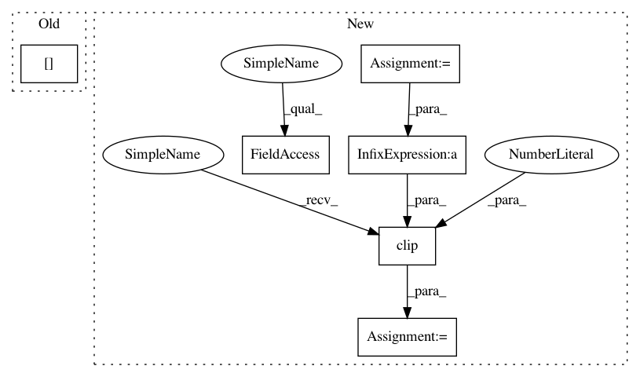

288e2868ce5f35a9c8ecf3e3fa913f293adcf7e7,cube/models/vocoder.py,BeeCoder,learn,#BeeCoder#,161
Before Change
dy.pickneglogsoftmax(softmax_outputs[ii], disc[mgc_index * self.UPSAMPLE_COUNT + ii]))
losses.append(dy.esum(frame_losses))
history = wave[
(mgc_index + 1) * self.UPSAMPLE_COUNT - self.HISTORY:(mgc_index + 1) * self.UPSAMPLE_COUNT]
if len(losses) >= batch_size:
loss = dy.esum(losses)
total_loss += loss.value()
After Change
// wave += np.array(wave, dtype=np.int32)
// wave += 32768
wave = wave / 32768
wave += 1.0
wave = wave * 65535
wave = np.clip(np.array(wave, np.int32), 0, 65535)
// wave = np.array(wave, dtype=np.uint16)
// from ipdb import set_trace
// set_trace()
// print(signal_fft)
last_proc = 0
dy.renew_cg()
total_loss = 0
losses = []
cnt = 0
last_state = None
last_val = 32768
for mgc_index in range(len(mgc)):
curr_proc = int((mgc_index + 1) * 100 / len(mgc))
if curr_proc % 5 == 0 and curr_proc != last_proc:
while last_proc < curr_proc:
last_proc += 5
sys.stdout.write(" " + str(last_proc))
sys.stdout.flush()
if mgc_index < len(mgc) - 1:
pred_output, softmax_outputs, last_state = self._predict_one(mgc[mgc_index], history=last_val,
gs_output=wave[
mgc_index * self.UPSAMPLE_COUNT:mgc_index * self.UPSAMPLE_COUNT +
self.UPSAMPLE_COUNT],
last_state=last_state)
frame_losses = []
for ii in range(len(softmax_outputs)):
frame_losses.append(
dy.pickneglogsoftmax(softmax_outputs[ii][0],
int(wave[mgc_index * self.UPSAMPLE_COUNT + ii]) / 256))
frame_losses.append(
dy.pickneglogsoftmax(softmax_outputs[ii][1],
int(wave[mgc_index * self.UPSAMPLE_COUNT + ii]) % 256))
losses.append(dy.esum(frame_losses))
last_val = wave[(mgc_index + 1) * self.UPSAMPLE_COUNT - 1]
if len(losses) >= batch_size:
loss = dy.esum(losses)
total_loss += loss.value()
In pattern: SUPERPATTERN
Frequency: 3
Non-data size: 6
Instances
Project Name: tiberiu44/TTS-Cube
Commit Name: 288e2868ce5f35a9c8ecf3e3fa913f293adcf7e7
Time: 2018-10-31
Author: boros@adobe.com
File Name: cube/models/vocoder.py
Class Name: BeeCoder
Method Name: learn
Project Name: tiberiu44/TTS-Cube
Commit Name: 288e2868ce5f35a9c8ecf3e3fa913f293adcf7e7
Time: 2018-10-31
Author: boros@adobe.com
File Name: cube/models/vocoder.py
Class Name: BeeCoder
Method Name: learn
Project Name: has2k1/plotnine
Commit Name: e77a2cb4eca82cfa46c132b535091ec5940bf8c5
Time: 2019-12-16
Author: has2k1@gmail.com
File Name: plotnine/scales/scale_xy.py
Class Name: scale_position_discrete
Method Name: map
Project Name: r9y9/wavenet_vocoder
Commit Name: 985496146dd1ebdc3a43ac921de627c6b61b5200
Time: 2019-08-25
Author: zryuichi@gmail.com
File Name: audio.py
Class Name:
Method Name: load_wav